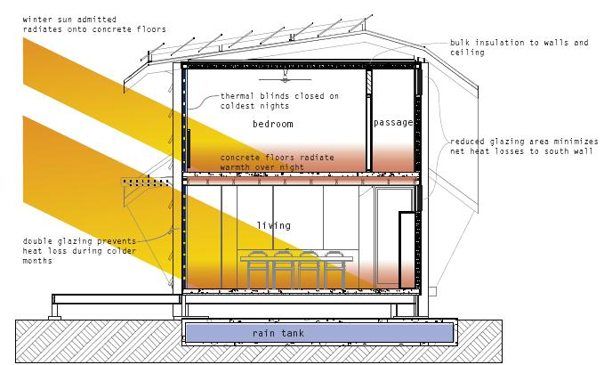
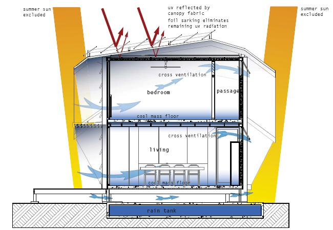

L’engagement des pays membres de l’Union Européenne à réduire leur consommation d’énergie et leurs émissions de CO2 selon la directive 2006/32/EC a engendré un grand intérêt pour l’efficacité énergétique des bâtiments et pour la technique des maisons passives. Dans la même idée, les demandes pour les maisons à basse énergie ont augmenté. Une maison à basse énergie fournit un confort thermique, un environnement sain et un faible coût de chauffage. Par exemple, les maisons à basse énergie au Danemark ont réussi à réduire la facture de chauffage à seulement 23 € par mois, ce qui, ramené à une année, équivaut au prix de l’abonnement annuel de télévision. Les bâtiments basse énergie utilisent des énergies renouvelables, ont une meilleur isolation pour toute l’enveloppe de la maison, les fenêtres sont de meilleurs qualité que celles recommandées par les normes du bâtiment, une meilleure étanchéité à l’air est assurée et des systèmes de récupération de chaleur par la ventilation est utilisé.
Les formes d’énergie renouvelable peuvent être le chauffage solaire de l’eau, l’électricité produite par des panneaux photovoltaïques ou l’énergie éolienne. Le chauffage de l’eau par le Soleil dans sa forme la plus simple est un panneau recouvert de métal, dont la surface inférieure est isolée. Des tubes contenant de l’eau sont placés dessus. Comme le panneau chauffe grâce au Soleil, l’eau contenue dans les tubes fait de même. L’eau circule alors des panneaux vers le système d’eau chaude du bâtiment. Les panneaux ou cellules photovoltaïques sont composés de cellules spéciales produisant de l’électricité au contact de l’énergie lumineuse. C’est la même technologie que pour les calculatrices solaires mais à plus grande échelle. Comme la demande augmente, le coût d’installation de ces systèmes diminue rapidement permettant l’utilisation des panneaux photovoltaïques dans un plus grand nombre de projets, et plus spécialement pour les usages domestiques. Les éoliennes produisent de l’énergie renouvelable sans émission nocive et aident ainsi à réduire une proportion importante des émissions de CO2.
Les maisons basse énergie sont conçues de façon à utiliser le soleil passivement grâce à une orientation spécifiques des fenêtres et à un système de ventilation. Cette utilisation passive est basée sur 2 principes : « Laisser entrer le soleil » et « Ne plus le laisser ressortir ». L’isolation de l’enveloppe externe réduit significativement le transfert de chaleur à travers les murs, le toit et le sol. Cette enveloppe doit être parfaitement étanche à l’air dans les moindres détails pour avoir un minimum de déperditions de chaleur et pour maintenir une température confortable. Par rapport aux fenêtres, une orientation au nord est recommandée. Les fenêtres seront grandes dans les pays tempérés et petites et placées en hauteur dans les pays où l’été est chaud et sec. Il ne doit pas y avoir trop de fenêtre côté est et encore moins côté ouest. Dans les climats chauds et secs, il ne doit pas avoir de fenêtres à l’est ou à l’ouest du tout. De plus, pour atteindre un très faible niveau de consommation énergétique (moins de 30 à 40kWh/(m².a)) dans les habitations, un système de ventilation équilibrée double-flux avec récupération de chaleur est nécessaire sans quoi il y aura déperdition de chaleur par la ventilation ainsi que des fuites d’air. Dans certains cas, même le chauffage peut être assuré par le système de ventilation. Le choix des habitants d’une ventilation équilibrée associée aux systèmes de chauffage sera déterminant pour une large diffusion des bâtiments à très faible consommation d’énergie.
Une connexion avec l’extérieur tout au long de l’année est un point clé pour les maisons basse énergie. Un cas idéal voudrait que l’utilisation passive de l’énergie solaire tienne compte des besoins en chauffage. Un rebord aux fenêtres permet de laisser entrer les rayons lumineux à angle faible l’hiver et fait de l’ombre au soleil de l’été (respectivement figure 5 et 6).
Un sol isolé en béton sera chauffé par le soleil les journées d’hiver et renverra la chaleur la nuit (Figure 5) ou bien restera frais pendant l’été (Figure 6). Un haut niveau d’isolation est un point essentiel de la conception. Toutes les portes et fenêtres sont en double vitrage. Des volets sont rajoutés pour un confort thermique supplémentaire et pour assurer une température ambiante chaude pendant les nuits froides. Des petites fenêtres facilitent les courants d’air pour combattre la chaleur en plein été (Figure 6). Il n’y a pas de climatisation. Le rafraichissement sera assuré par des ventilateurs au plafond, les courants d’air et la fraicheur du sol.
Tous les bâtiments construits après le 31 Décembre 2018 dans les pays de l’Union Européenne devront produire autant d’énergie qu’ils en consomment. Le Parlement européen a modifié la directive sur les performances énergétiques des bâtiments de 2002 en appelant à plus d’investissements publics dans les bâtiments à hautes performances énergétiques. Le Parlement a aussi donné comme consigne aux Etats membres de mettre en place des objectifs nationaux pour les bâtiments existants. Si les Etats membres réussissent à atteindre ces objectifs, il y aura des bâtiments neutres à travers toute l’Union Européenne après 2018. Les bâtiments neutres sont des bâtiments dont la consommation annuelle d’énergie primaire est égale ou inférieure à la quantité d’énergie renouvelable qu’elle produit sur place. De plus, la performance énergétique des bâtiments sera améliorée à chaque fois qu’ils subiront des rénovations importantes ou que des éléments de construction ou d’équipements (par exemple les fenêtres, les chaudières ou les systèmes de climatisation) seront remplacés. La commission européenne devait établir une méthodologie commune de calcul de la performance énergétique des bâtiments d’ici le 31 Mars 2010.